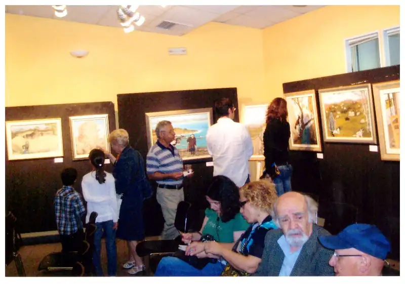
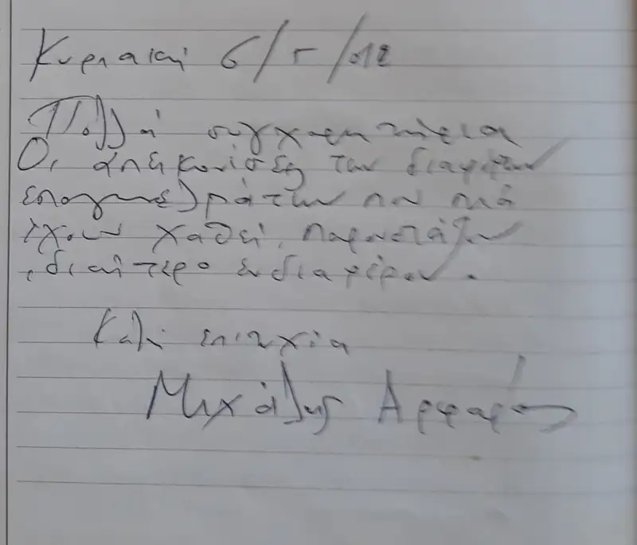
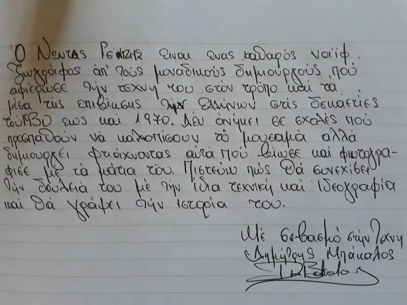
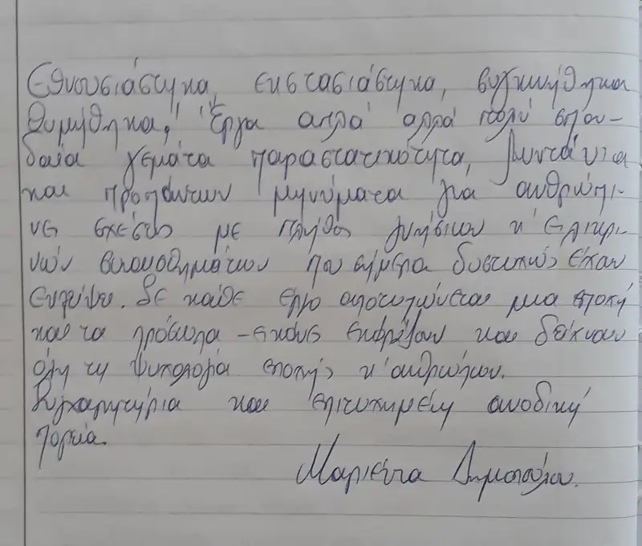
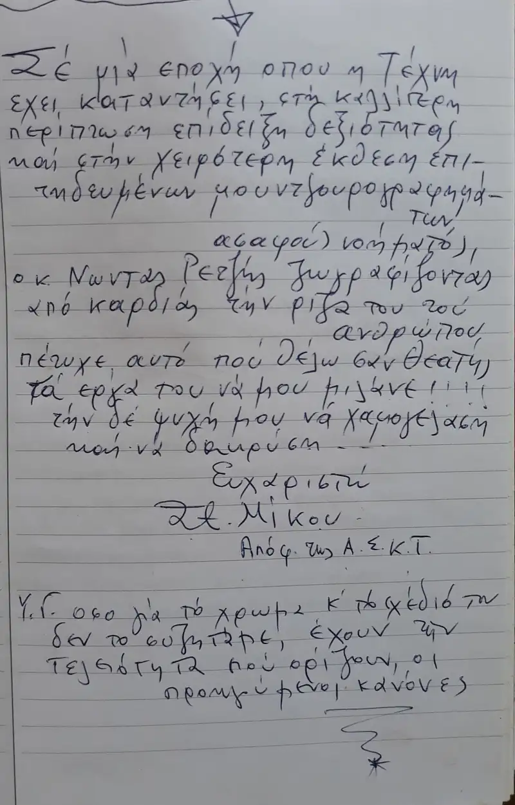
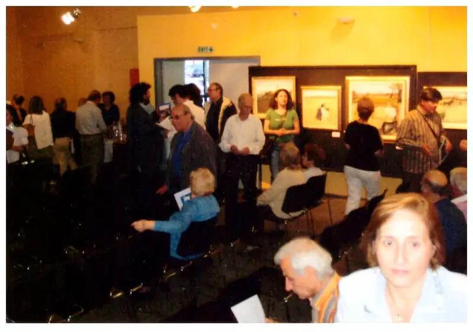
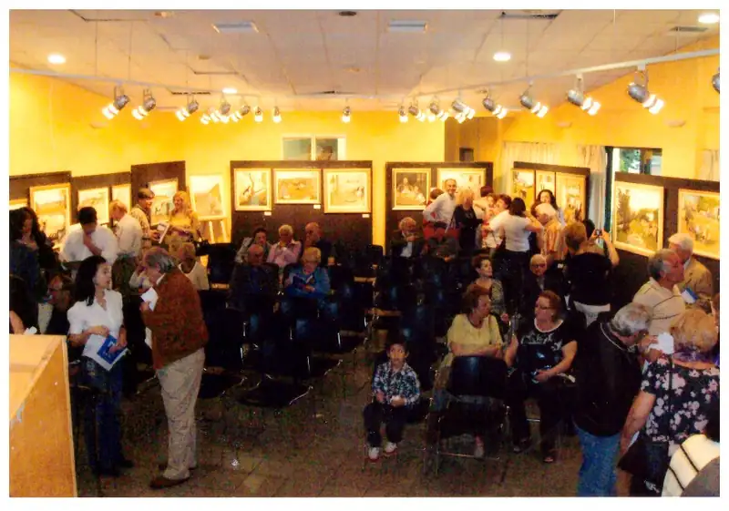

ΚΡΙΤΙΚΕΣ ΚΑΙ ΑΡΘΡΑ
Έντονα σχήματα και καθαρά χρώματα κυριαρχούν στις ενατενίσεις των καταθέσεων του εμπνευσμένου δημιουργού Νώντα Ρεντζή. Τα έργα του εντυπωσιάζουν με την προσωπικά και ιδιαίτερα γοητευτική τεχνοτροπία του, παρουσιάζει σκηνές όπου πρωτοστατεί η ουσία και η θέση της ζωής. Με αριστουργηματική παιδεία και μέθεξη, οικειοποιούνται μη αυτόνομη συγκρότηση γεωμετρικότητας που κατέχει το αιθέριο αέναο σπινθηροβόλημα μιας κοσμολογικής τελεολογίας.
Λεόντιος Πετμεζάς, Θεωρητικός - Ιστορικός Τέχνης






Οι τυφλωμένοι από τους μοντερνισμούς δεν μπορούν να δουν την αληθινή ζωγραφική που πηγάζει από την ανάγκη του ανθρώπου να ιστορήσει την εποχή του, να συγγράψει με το ταλέντο του που του χάρισε ο Θεός, να περιγράψει πως ήταν η ζωή όταν ήταν παιδί και ο τόπος ήταν ακόμα παρθένος – ατελείωτος από την αρχή του – από τις ρίζες του.
Τα έργα του δείχνουν τον πόθο του και την αγάπη του για την ζωγραφική τέχνη που σαν πηγαίος, χωρίς εικαστική παιδεία έχει την δική του γλώσσα να αποθανατίζει και να μνημονεύει υπάρξεις, που έχει καταγράψει η μνήμη του. Σαν μνημόσυνα που μας “επι”κοινωνούν, τον κόσμο του με την χαρά της εικαστικής των εξανάστασης.
Γ. Ζυμαράκης, Εικαστικός – εκδότης του περιοδικού Gallery Guide

